| Options | 시작 다음 이전 |
|
ForCusStudio 의 기능과 관련된 설정 사항 들을 지정 할 수 있습니다.
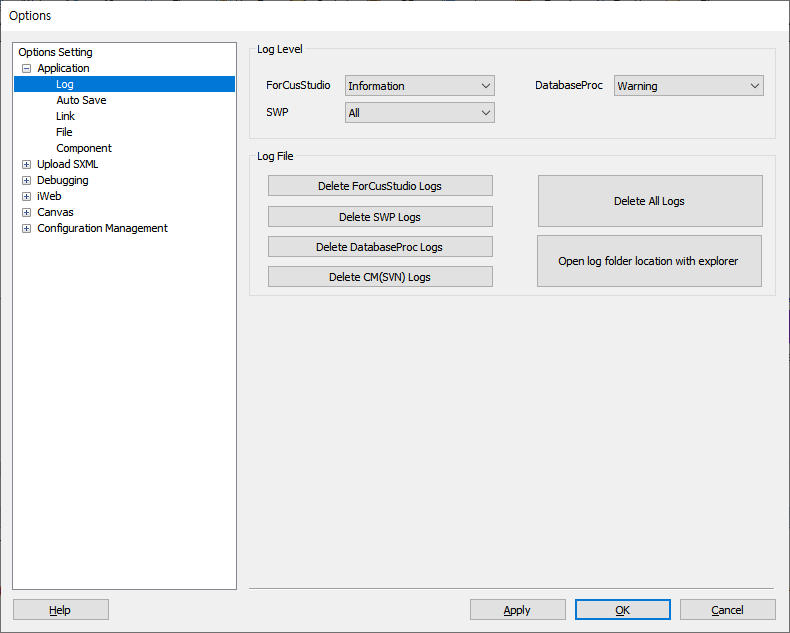
Log Level
ForCusStudio : ForCusStudio의 로그 레벨을 정의 합니다. DatabaseProc : 데이터 베이스 처리 모듈의 로그 레벨을 정의 합니다. SWP : 시나리오 작업 처리 프로세스의 로그 레벨을 정의 합니다.(Item Information Data, AC Data, Project Build)
Log File
Delete ForCusStudio Logs Button : ForCusStudio의 로그를 삭제 합니다. Delete SWP Logs Button : 시나리오 작업 처리 프로세스의 로그를 삭제 합니다. Delete DatabaseProc Logs Button : 데이터 베이스 처리 모듈의 로그를 삭제 합니다. Delete CM(SVN) Logs Button : SVN 처리 모듈의 로그를 삭제 합니다. Delete All Logs Button : SCE 모든 로그를 삭제 합니다. Open log folder location with explorer Button : 윈도우 탐색기를 실행하고 로그 폴더로 이동합니다.
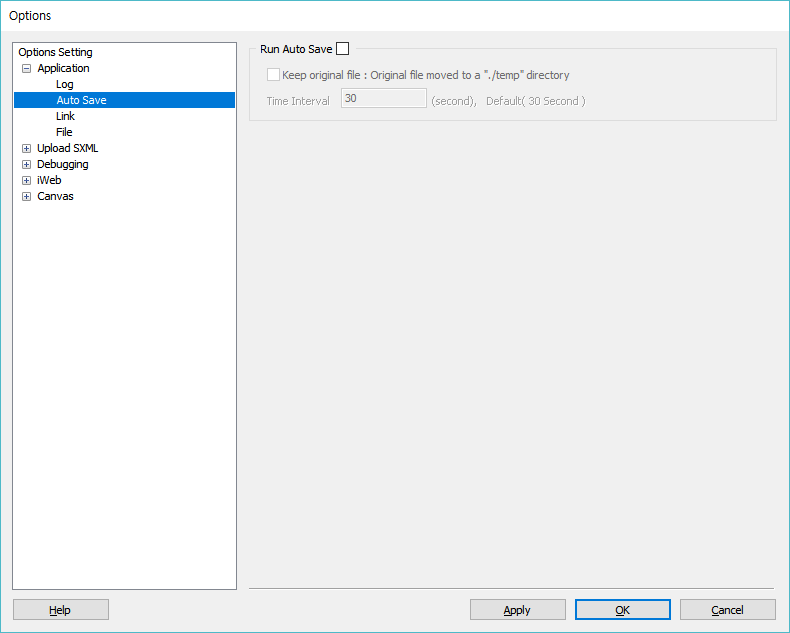
Run Auto Save
Keep original file : Original file moved to a "./temp" directory Check Box : 자동으로 저장된 시나리오 파일로 현재 시나리오 파일을 교체하면 현재 시나리오 파일을 백업합니다. 단, 이전에 이미 백업된 시나리오 파일이 있으면 현재 백업할 시나리오 파일로 덮어쓰게 됩니다. Time Interval : 자동저장 체크 주기를 설정합니다.(초 단위 이며, 기본 30초)
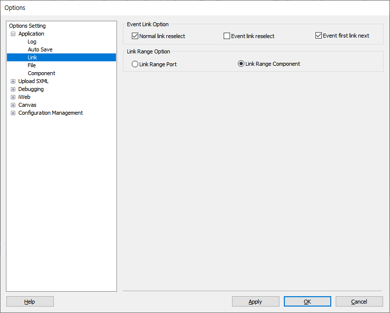
연결되어 있는 링크를 지우지 않고 다시 다른 아이템에 연결하면 기존 링크는 지워지고 링크되는 기능입니다.
* Event Link Item : GetDigit, Play, PacketCall, DBQuery, PacketJson, PacketJsonEx, RequestHTTP, NLURequest, IntentCall, EntityCall
Normal link reselect Check Box : 기본 링크 재연결(Default On), Event Link를 제외한 모든 기본 링크 Event link reselect Check Box : 이벤트 링크 재연결(Default Off), GetDigit, Play, PacketCall, DBQuery의 이벤트 처리 Event first link next Check Box : Event Link 최초 연결 시 링크메뉴 없이 Next Link 기능
Link Range Port Radio Button : 컴포넌트 아이템 및 아이템 라벨 영역의 중간 Port에 링크하기 때문에 링크 영역이 넓다. Link Range Component Radio Button : 라벨을 제외한 컴포넌트 아이템 영역에 링크하기 때문에 복잡하고 좁은 시나리오 플로우에서 세밀한 링크가 가능하다.
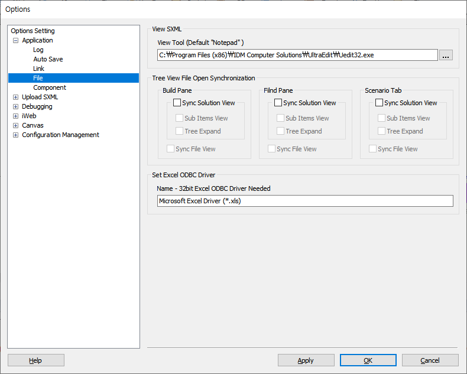
View Tool : Build 메뉴의 View Build Project File(SXML), View Compile Scenario File(F/MXML) 시에 뷰 또는 편집 할 수 있는 툴을 지정할 수 있습니다.(기본은 Notepad)
Tree View File Open Synchronization
빌드 창에서 빌드에러 등의 빌드로그를 더블클릭 했을 때 해당 시나리오의 아이템으로 이동하게 되는데 이때 솔루션 뷰, 파일 뷰 트리의 해당 시나리오 파일 항목 으로도 이동하는 기능. 검색 창에서는 검색된 내용을 더블클릭 시, 시나리오 탭에서는 탭을 이동할 때 마다 트리 뷰에서도 해당 파일 항목으로 이동한다.
Build Pane
빌드 창에서 연동
Sync Solution View Check Box : 솔루션 뷰 연동
Sub Items View Check Box : 시나리오 파일에 소속된 아이템을 보인다. Tree Expand Check Box : 아이템 트리를 확장한다.
Sync File View Check Box : 파일 뷰 연동
Find Pane
검색 창에서 연동
Sync Solution View Check Box : 솔루션 뷰 연동
Sub Items View Check Box : 시나리오 파일에 소속된 아이템을 보인다. Tree Expand Check Box : 아이템 트리를 확장한다.
Sync File View Check Box : 파일 뷰 연동
Scenario Tab
시나리오 탭에서 연동
Sync Solution View Check Box : 솔루션 뷰 연동00
Sub Items View Check Box : 시나리오 파일에 소속된 아이템을 보인다. Tree Expand Check Box : 아이템 트리를 확장한다.
Sync File View Check Box : 파일 뷰 연동
Set Excel ODBC Driver
탐색기 > ODBC Data Source(32-bit) 에 설정한 32bit 드라이버 이름 입력
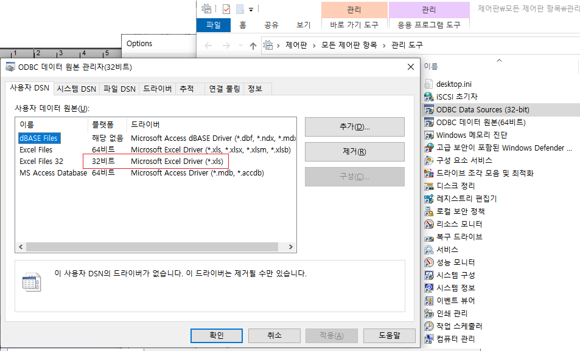
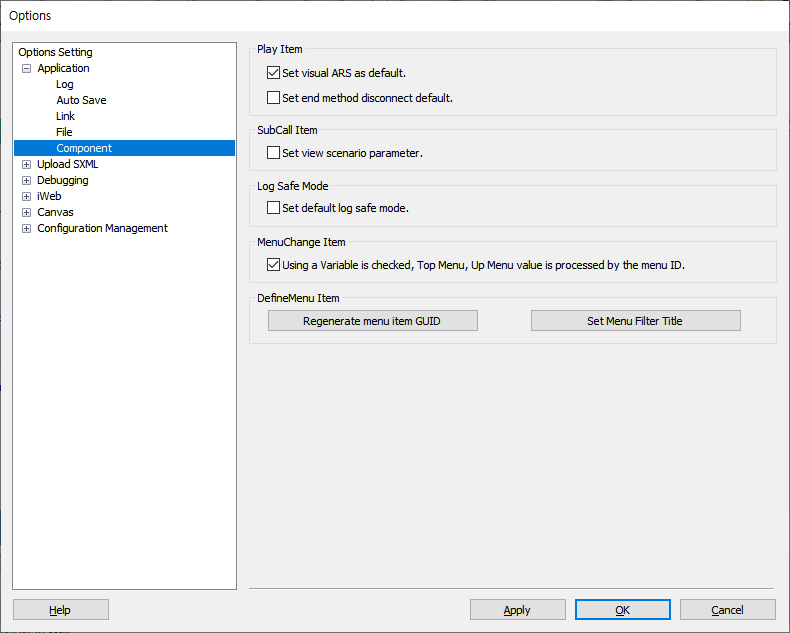
Set visual ARS as default Check Box : Play 아이템 생성 시 Visual ARS 사용으로 체크 Set end method disconnect default Check Box : Play 아이템 생성 시 End Method 속성 값이 Disconnect
Set view scenario parameter Check Box : SubCall 아이템 속성 창 오픈 시 호출한 시나리오 파일의 Start 아이템 파라미터 정보를 자동으로 표시
Set default log safe mode Check Box : 커맨드 아이템별 로그 암호화 시에 Default를 Safe로 설정(Default Normal)
Using a Variable is checked, Top Menu, Up Menu value is processed by the menu ID. Check Box : MenuChange 아이템에서 Using a Variable 체크 시 Top, Up Menu 항목의 값은 변수 또는 숫자, 문자열로 써야 하나 숫자가 아닌 Menu ID를 그대로 사용하는 경우 메뉴이동이 안되는데 이 옵션을 체크하면 Top, Up Menu 항목의 값을 빌드 시 값으로만 처리(Menu ID)하게 하는 기능
Regenerate menu item GUID and refresh Menu View Button : Global 및 CommonGlobal 파일의 모든 DefineMenu 아이템내의 각 Menu ID의 GUID를 새로 생성하고 Workspace Menu View 트리를 갱신하는 기능
[사용방법] - 버튼을 누르면 GUID 재 생성 및 Menu View 갱신까지 모두 한 후에 완료 창이 파업된다. 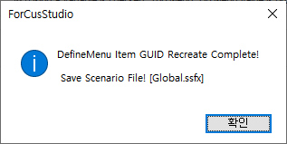 - 완료 창에서 확인 버튼을 누르고 Options 창도 닫은 후에 자동으로 오픈된 Global.ssfx, CommonGlobal.ssfx 파일을 저장한다.(Menu ID 별 GUID 재 생성으로 파일이 수정되었음) * 저장하지 않고 파일을 닫으면 다음에 열었을 때 이전 GUID를 가지고 오픈된다.
Set Menu Filter Title Button : 메뉴 필터 타이틀 설정 - 변경하고자 하는 필터의 타이틀을 설정 - 설정설정해제는 NULL String으로 설정(Default "FilterX" 로 표시) 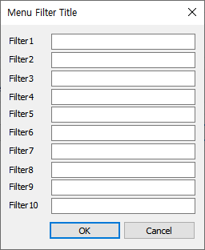
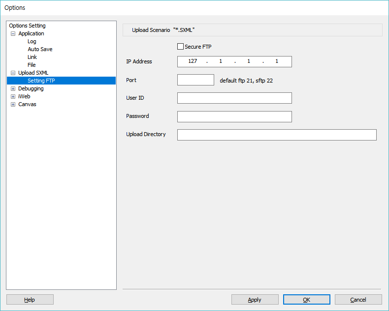
· 빌드된 *.SXML 시나리오 파일의 업로드와 관련된 정보를 지정 합니다.
Secure FTP Check Box : 체크 하면 FTP가 아닌 Secure FTP를 사용하여 접속합니다. IP Address : FTP 서버의 IP 를 지정 합니다. Port : FTP 서버의 Port 를 지정 합니다.(지정하지 않으면 ftp(21), sftp(22)로 사용합니다) User ID : FTP 서버의 사용자 아이디를 지정 합니다. Password : FTP 서버의 비밀번호를 지정 합니다. Upload Directory :FTP 서버의 디렉토리를 지정 합니다.
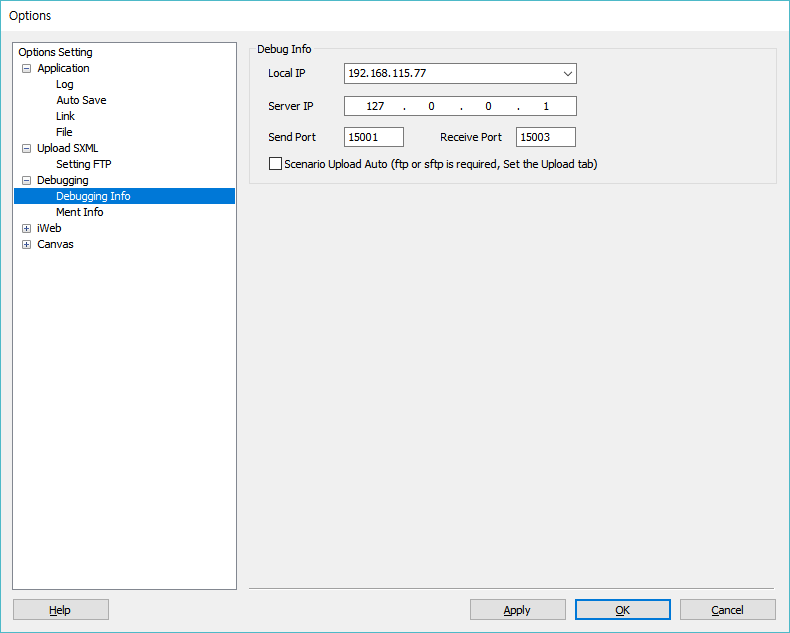
· Visual Debugging 과 관련된 정보를 지정 합니다.
Local IP : ForCusStudio가 실행되고 있는 시스템의 로컬 IP를 지정합니다.(다중 어댑터인 경우의 처리를 위해 IP를 선택합니다.) Server IP : ForCus 엔진(SLEE)의 IP 를 지정 합니다. Send Port : ForCus 엔진(SLEE)의 디버깅 포트를 지정합니다. Receive Port : ForCusStudio의 디버깅 포트를 지정합니다. Scenario Upload Auto Check Box : 체크 하면 디버깅 시나리오를 디버깅 서버로 자동 업로드 합니다.(ftp 또는 sftp가 설정되어 있어야 하며, Upload Tab에서 ftp, sftp설정을 합니다.)
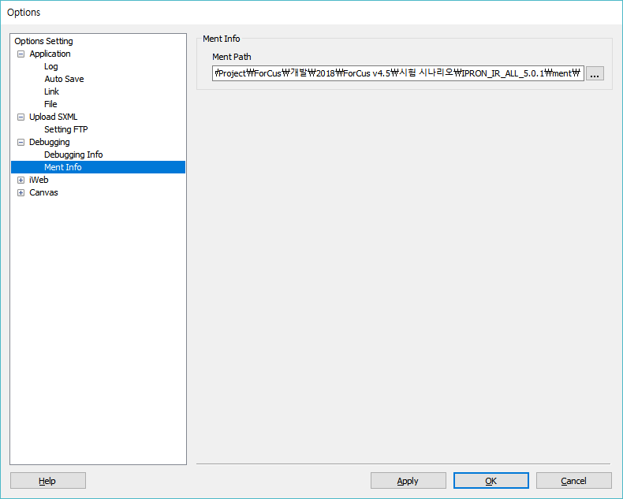
Ment Path : DefineMent 에 지정한 멘트의 실제 파일이 있는 디렉토리를 지정 합니다. 디버깅 시 여기에 있는 파일을 사용 하며, Play 아이템 등에서 지정한 멘트를 들을 때도 여기의 디렉토리를 참조합니다.
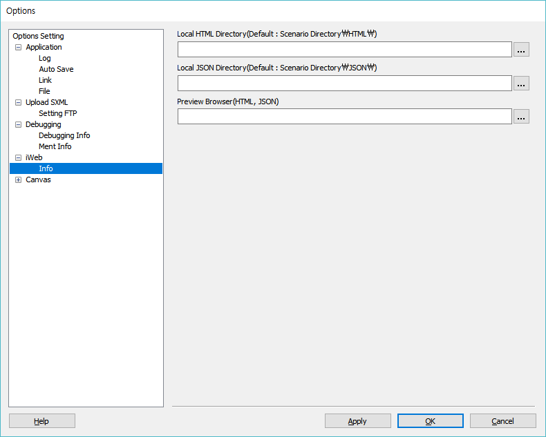
· HTML 파일 및 기본 브라우져를 지정 합니다.(RequestPage Item 에서 사용)
Local HTML Directory(Default : Scenario Directory \HTML\) : 읽어 들일 HTML 파일의 디렉토리를 지정 합니다. 지정 하지 않으면 기본 디렉토리가 사용 됩니다.( 시나리오 디렉토리 하위에 \HTML\ )
Local JSON Directory(Default : Scenario Directory\JSON\) : 읽어 들일 JSON 파일의 디렉토리를 지정 합니다. 지정 하지 않으면 기본 디렉토리가 사용 됩니다.( 시나리오 디렉토리 하위에 \JSON\ )
Preview Browser(HTML, JSON) : 읽어 들인 HTML 파일을 보여줄 브라우져를 지정 합니다.
사용자 라벨 옵션 설정
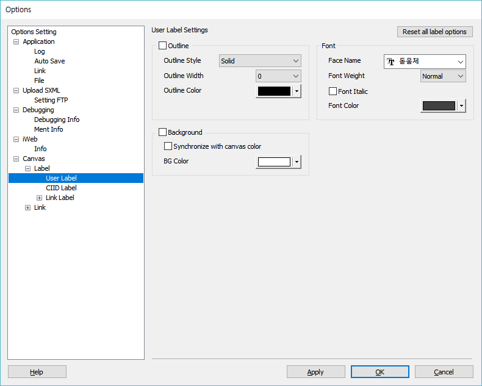
컴포넌트 ID 라벨 옵션 설정
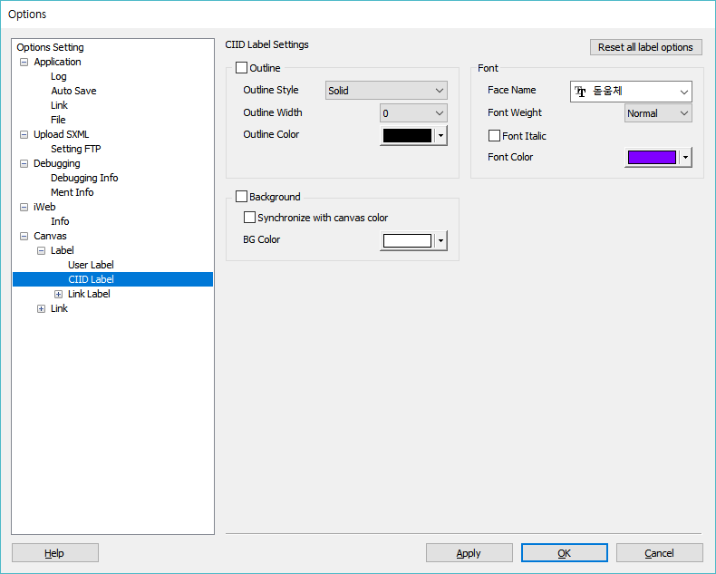
Canvas > Label > Link Label > Normal
일반 링크 라벨 옵션 설정
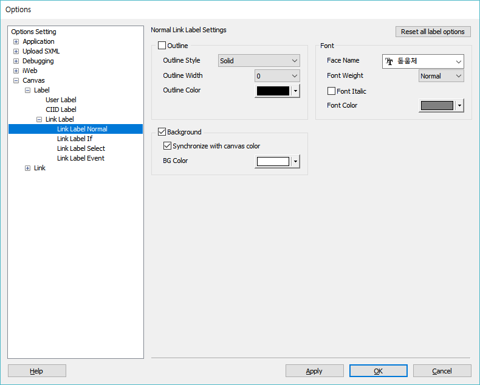
Canvas > Label > Link Label > If
If 링크 라벨 옵션 설정
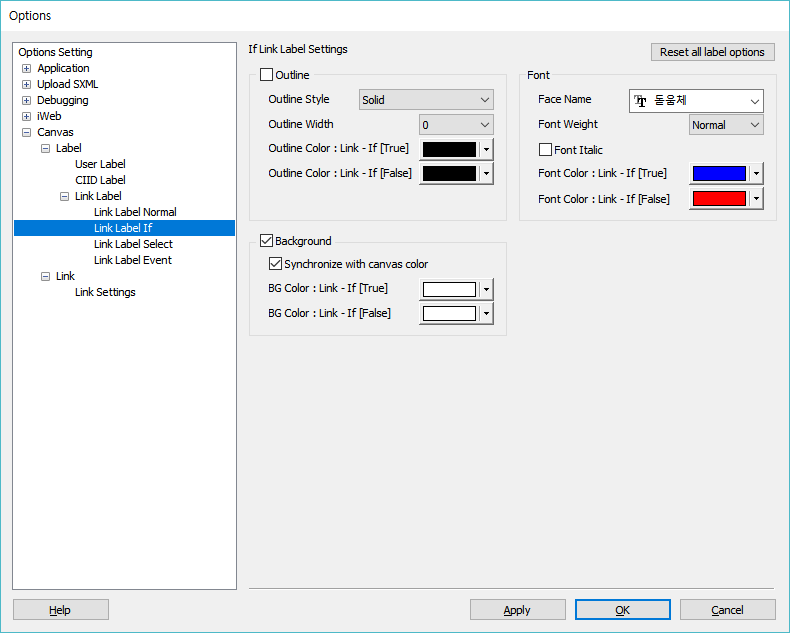
Canvas > Label > Link Label > Select
Select 링크 라벨 옵션 설정
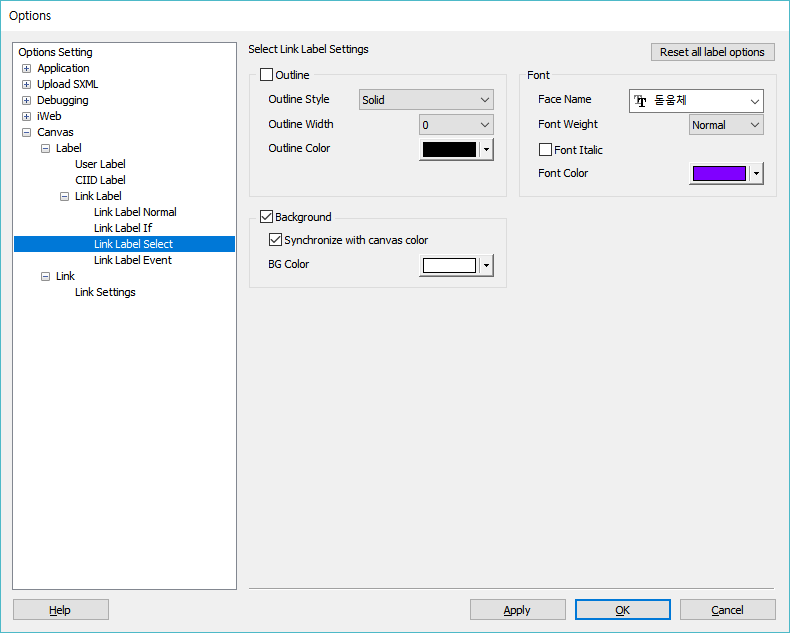
Canvas > Label > Link Label > Intent
Intent 링크 라벨 옵션 설정
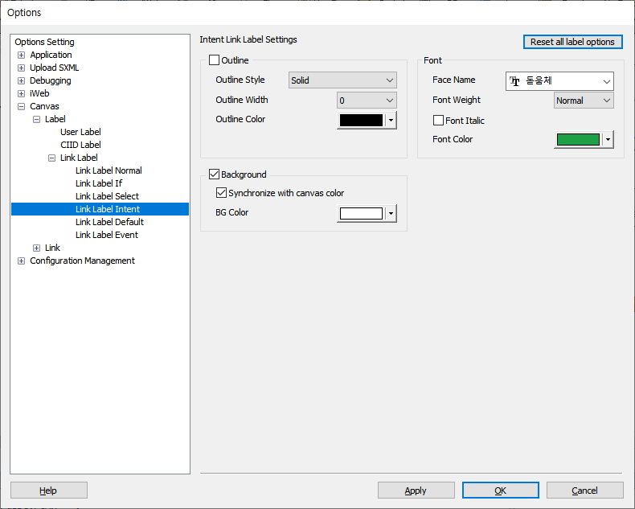
Canvas > Label > Link Label > Default
Default 링크 라벨 옵션 설정
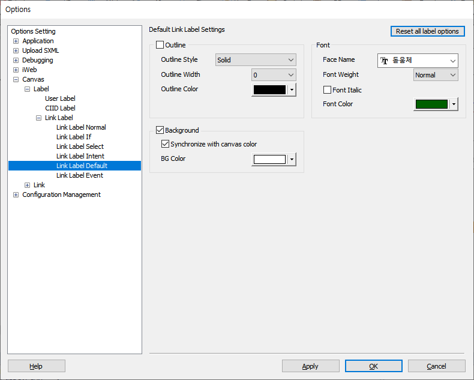
Canvas > Label > Link Label > Event
이벤트 링크 라벨 옵션 설정
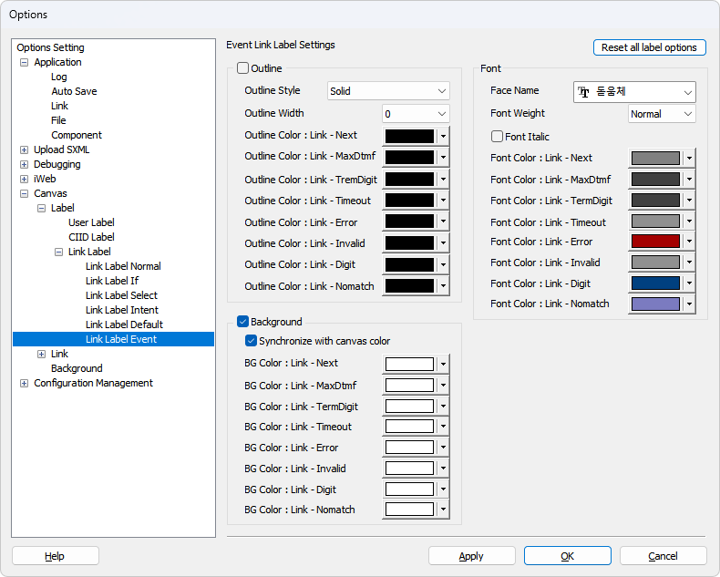
편집화면 배경색
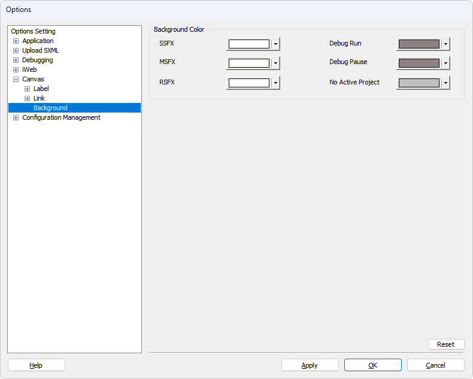
링크 옵션 설정
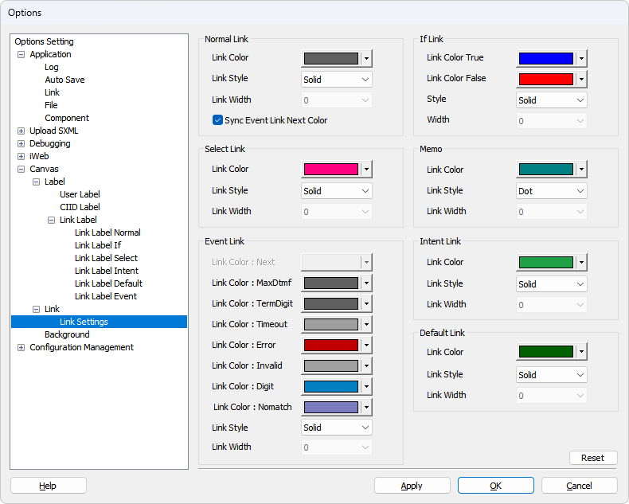
Sync Event Link Next Color : Next Link Color를 Nomal Link Color와 같이 사용
Configuration Management > Config
형상관리 On/Off
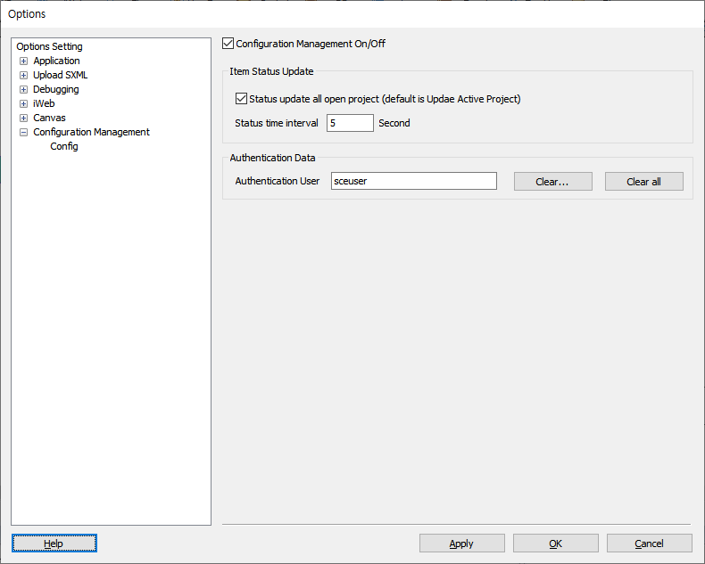
Item status update
Status update all open project(default is Update Active Project) Check Box : 솔루션에서 오픈한 모든 프로젝트에 대해서 형상관리 파일들의 상태를 체크(기본은 현재 선택된 프로젝트) Status time interval : 형상관리 파일들의 상태를 체크하는 시간 주기(주기가 짧으면 파일이 많을 경우 체크 시간이 좀 걸리기 때문에 버벅거림이 발생할 수 있음)
Authentication Data
Authentication User : 현재 인증된 사용자 ID Clear... Button : 캐시에 저장된 인증 자격정보를 선택하여 삭제 Clear all Button : 캐시에 저장된 인증 자격정보를 모두 삭제
|
| Copyrights(C) Bridgetec.co.kr. All Rights Reserved | 시작 다음 이전 |